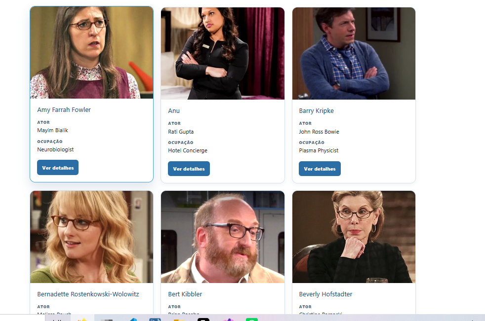

Publicado
01
BigBang API Explorer
Catálogo interativo de The Big Bang Theory para explorar personagens, episódios e locais da série. O projeto começou como uma API REST em C# e evoluiu para uma aplicação web com interface em React, painel administrativo e autenticação JWT.
Aplicação publicada no Somee com HTTPS, com o React e a API servidos no mesmo domínio.